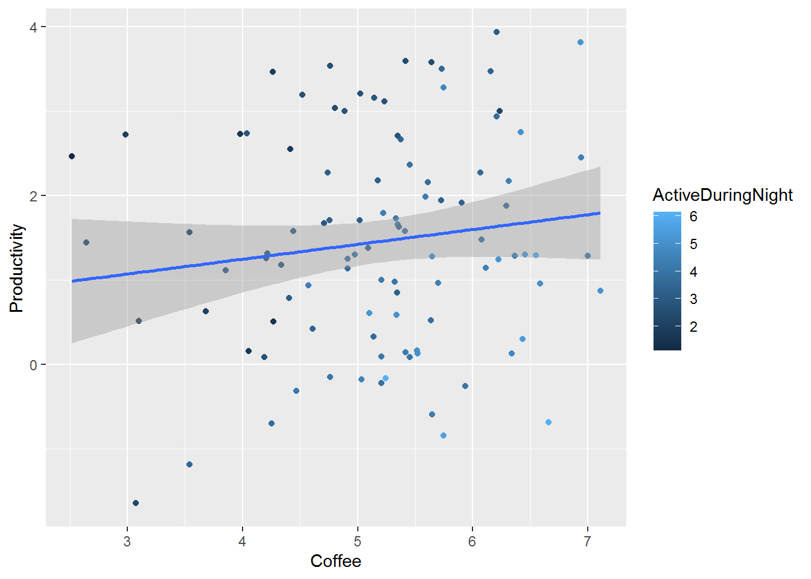
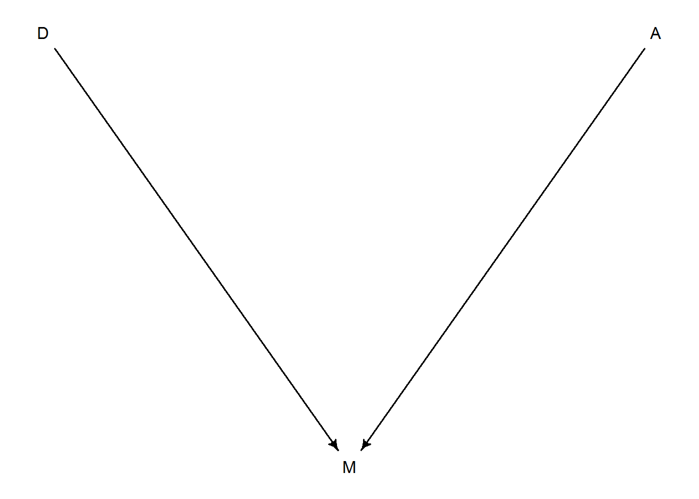
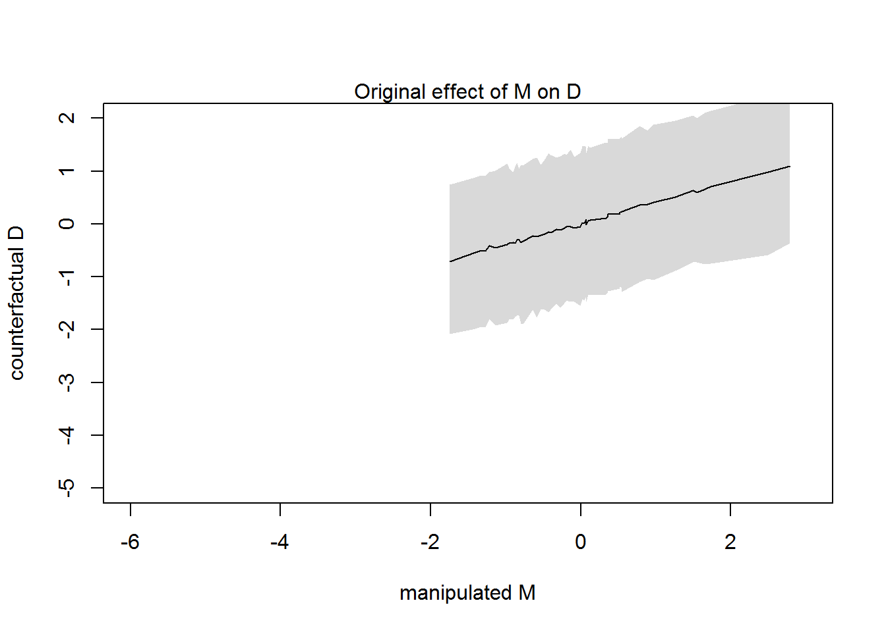
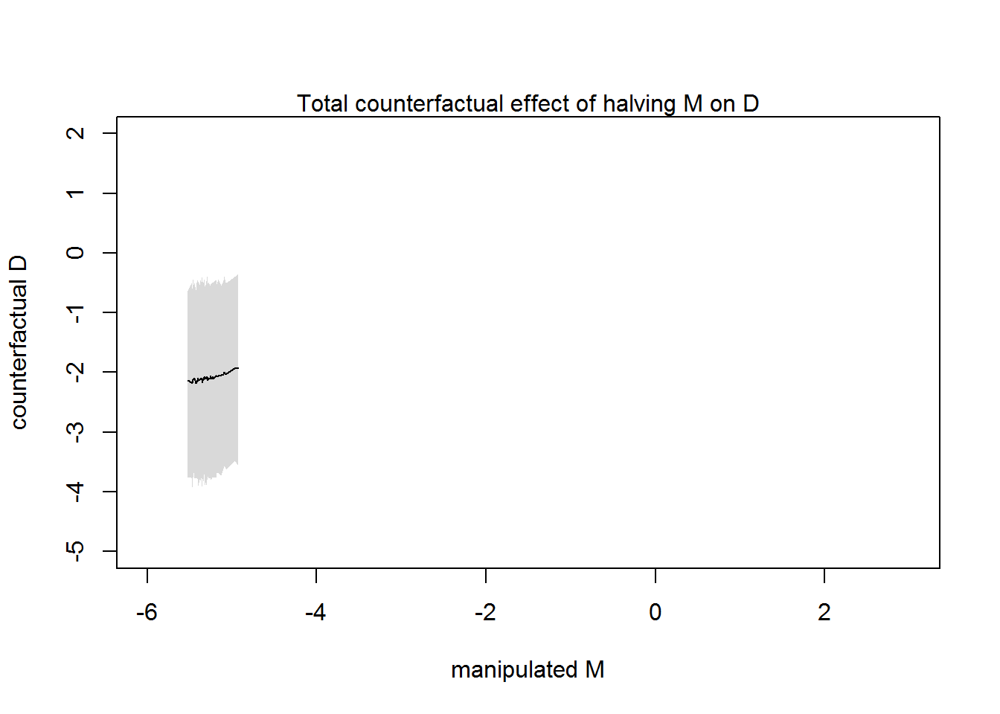
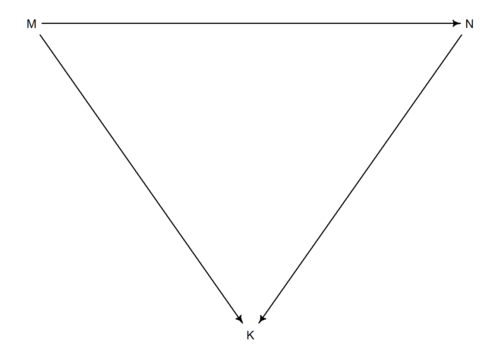

Chapter 9 Solutions for Chapter 5
5E1
Which of the linear models below are multiple linear regressions?
- \(µ_i = α + β \cdot x_i\) Fits single variable \(x_i\)
- \(µ_i = β_x \cdot x_i + β_z \cdot z_i\) ←
- \(µ_i = α + β(x_i − z_i)\) Fits single variable, which is difference between \(x\) and \(z\).
- \(µ_i = α + β_x \cdot x_i + β_z \cdot z\) Fits single variable \(x\) plus a constant \(z\), which simply is an offset of an intercept.
5E2
Write down a multiple regression to evaluate the claim: Animal diversity is linearly related to latitude, but only after controlling for plant diversity. You just need to write down the model definition.
I skip likelihood and priors. \[Diversity_i = α + β_{lat} \cdot Lat_i + β_{plant} \cdot Plant_i\]
5E3
Write down a multiple regression to evaluate the claim: Neither amount of funding nor size of laboratory is by itself a good predictor of time to PhD degree; but together these variables are both positively associated with time to degree. Write down the model definition and indicate which side of zero each slope parameter should be on.
Again, no likelihood or priors for simplicity. \[Time_i = \alpha + \beta_F \cdot Funding_i + \beta_S \cdot Size_i\] Both variables are positively associated so both slopes should be positive.
5E4
Suppose you have a single categorical predictor with 4 levels (unique values), labeled A, B, C and D. Let \(A_i\) be an indicator variable that is 1 where case i is in category A. Also suppose \(B_i\), \(C_i\), and \(D_i\) for the other categories. Now which of the following linear models are inferentially equivalent ways to include the categorical variable in a regression? Models are inferentially equivalent when it’s possible to compute one posterior distribution from the posterior distribution of another model.
- \(µ_i = α + β_A A_i + β_B B_i + β_D D_i\)
- \(µ_i = α + β_A A_i + β_B B_i + β_C C_i + β_D D_i\)
- \(µ_i = α + β_B B_i + β_C C_i + β_D D_i\)
- \(µ_i = α_A A_i + α_B B_i + α_C C_i + α_D D_i\)
- \(µ_i = α_A(1 − B_i − C_i − D_i) + α_B B_i + α_C C_i + α_D D_i\)
Inferentially equivalent:
\(α\) codes for baseline condition \(C\), all other intercepts can be computed as \(α +β\) coefficients.
\(α\) codes for baseline condition \(A\), all other intercepts can be computed as \(α +β\) coefficients.
All conditions are modeled explicitly as intercepts.
\(α_A(1 − B_i − C_i − D_i) + α_B B_i + α_C C_i + α_D D_i\) then rearranged gives \(α_A + (α_B-α_A) B_i + (α_C-α_A) C_i + (α_D-α_A) D_i\), as \(α_B-α_A = β_B\), we can rewrite and see that it is identical to #3: \(α_A + β_B B_i + β_C C_i + β_D D_i\)
Different model:
- It is overdetermined, as there more parameters (five, including the intercept \(α\)) than variables (four).
5M1
Invent your own example of a spurious correlation. An outcome variable should be correlated with both predictor variables. But when both predictors are entered in the same model, the correlation between the outcome and one of the predictors should mostly vanish (or at least be greatly reduced).
Answer: Why invent, if there is a whole website just for that: tylervigen.com/spurious-correlations.
5M2
Invent your own example of a masked relationship. An outcome variable should be correlated with both predictor variables, but in opposite directions. And the two predictor variables should be correlated with one another.
Answer: coffee consumption increases productivity but reduces amount of sleep that, in turn, reduces productivity.
set.seed(142397)
N <- 100
rho <- 0.7
work <-
data.frame(Coffee = rnorm(N, 5, 1)) %>%
mutate(ActiveDuringNight = rnorm(N, Coffee * rho, sqrt(1-rho^2)),
Productivity = rnorm(N, Coffee - ActiveDuringNight))
ggplot(work, aes(x=Coffee, y=Productivity, color=ActiveDuringNight)) +
geom_point() +
geom_smooth(method="lm", formula=y~x)
coffee_only_fit <- rethinking::quap(
alist(
Productivity ~ dnorm(mu, sigma),
mu <- a + bCoffee*Coffee,
a ~ dnorm(0, 10),
bCoffee ~ dnorm(0, 1),
sigma ~ dexp(1)),
data = work)
active_only_fit <- rethinking::quap(
alist(
Productivity ~ dnorm(mu, sigma),
mu <- a + bActive*ActiveDuringNight,
a ~ dnorm(0, 10),
bActive ~ dnorm(0, 1),
sigma ~ dexp(1)),
data = work)
work_fit <- rethinking::quap(
alist(
Productivity ~ dnorm(mu, sigma),
mu <- a + bCoffee*Coffee + bActive*ActiveDuringNight,
a ~ dnorm(0, 10),
bCoffee ~ dnorm(0, 1),
bActive ~ dnorm(0, 1),
sigma ~ dexp(1)),
data = work)
precis(work_fit)## mean sd 5.5% 94.5%
## a 0.1696173 0.52881231 -0.6755269 1.0147615
## bCoffee 0.9302926 0.13805381 0.7096560 1.1509293
## bActive -0.9716076 0.12270282 -1.1677104 -0.7755048
## sigma 0.9666352 0.06789557 0.8581250 1.07514545M3
It is sometimes observed that the best predictor of fire risk is the presence of firefighters — States and localities with many firefighters also have more fires. Presumably firefighters do not cause fires. Nevertheless, this is not a spurious correlation. Instead fires cause firefighters. Consider the same reversal of causal inference in the context of the divorce and marriage data. How might a high divorce rate cause a higher marriage rate? Can you think of a way to evaluate this relationship, using multiple regression?
Answer: Higher divorce rate means more adults that can re-marry, raising the marriage rate. We can evaluate this by reversing the presumed causal relationship with marriage rate becoming the outcome variable and divorce rate (and median marriage age) being predictors.

5M4
In the divorce data, States with high numbers of members of the Church of Jesus Christ of Latter-day Saints (LDS) have much lower divorce rates than the regression models expected. Find a list of LDS population by State and use those numbers as a predictor variable, predicting divorce rate using marriage rate, median age at marriage, and percent LDS population (possibly standardized). You may want to consider transformations of the raw percent LDS variable.
Answer: I used data supplied by Wikipedia.
# adding percentage information to the table
data("WaffleDivorce")
waffles <-
WaffleDivorce %>%
mutate(Location = as.character(Location),
D = standardize(Divorce),
M = standardize(Marriage),
A = standardize(MedianAgeMarriage))
lds <-
read_excel("data/LDS.xlsx") %>%
select(State, LDS) %>%
mutate(zLDS = c(scale(LDS)))
waffles_lds <- left_join(waffles, lds, by=c("Location" = "State"))
lds_fit <- quap(
alist(
D ~ dnorm(mu, sigma),
mu <- a + bM*M + bA*A + bLDS * zLDS,
a ~ dnorm(0, 0.2),
bM ~ dnorm(0, 0.5),
bA ~ dnorm(0, 0.5),
bLDS ~ dnorm(0, 0.5),
sigma ~ dexp(1)),
data = waffles_lds)
precis(lds_fit)## mean sd 5.5% 94.5%
## a -0.001287808 0.09189733 -0.1481575 0.1455819
## bM 0.037721186 0.14749863 -0.1980101 0.2734525
## bA -0.689164567 0.14428375 -0.9197579 -0.4585713
## bLDS -0.312889876 0.11857497 -0.5023956 -0.1233842
## sigma 0.731605049 0.07264332 0.6155070 0.84770315M5
One way to reason through multiple causation hypotheses is to imagine detailed mechanisms through which predictor variables may influence outcomes. For example, it is sometimes argued that the price of gasoline (predictor variable) is positively associated with lower obesity rates (outcome variable). However, there are at least two important mechanisms by which the price of gas could reduce obesity. First, it could lead to less driving and therefore more exercise. Second, it could lead to less driving, which leads to less eating out, which leads to less consumption of huge restaurant meals. Can you outline one or more multiple regressions that address these two mechanisms? Assume you can have any predictor data you need.
\[Weight = \alpha + \beta_{Gasoline} Gasoline + \beta_{Driving} Driving + \beta_{Eating} Eating\] Here, if both driving and eating out are fully caused by the gasoline price (so, we can assume that \(Driving = \beta_DG Gasoline + \epsilon\), same for eating out), we would expect multple regression to put higher weight on \(\beta_{Gasoline}\) than to caused variables.
5H1
In the divorce example, suppose the DAG is: M → A → D. What are the implied conditional independencies of the graph? Are the data consistent with it?
Answer: This is a chain, so marriage and divorce rate are independent conditional on age. Data is compatible with this causal model.
5H2
Assuming that the DAG for the divorce example is indeed M → A → D, fit a new model and use it to estimate the counterfactual effect of halving a State’s marriage rate M. Use the counterfactual example from the chapter (starting on page 140) as a template.
data(WaffleDivorce)
d <- list()
d$A <- standardize(WaffleDivorce$MedianAgeMarriage)
d$D <- standardize(WaffleDivorce$Divorce)
d$M <- standardize(WaffleDivorce$Marriage)
d$halfM <- ((d$M / 2) - mean(WaffleDivorce$Marriage)) / sd(WaffleDivorce$Marriage)
MAD_fit <- quap(
alist(
## M -> A -> D
D ~ dnorm(mu, sigma),
mu <- a + bA*A,
a ~ dnorm(0, 0.2),
bA ~ dnorm(0, 0.5),
sigma ~ dexp(1),
## M -> A
A ~ dnorm(mu_A, sigma_A),
mu_A <- aA + bMA*M,
aA ~ dnorm(0, 0.2),
bMA ~ dnorm(0, 0.5),
sigma_A ~ dexp(1)),
data = d)
precis(MAD_fit)## mean sd 5.5% 94.5%
## a -2.447373e-06 0.09737992 -0.1556344 0.1556295
## bA -5.683983e-01 0.11000148 -0.7442019 -0.3925947
## sigma 7.883380e-01 0.07801437 0.6636559 0.9130200
## aA 6.352864e-05 0.08686271 -0.1387599 0.1388869
## bMA -6.947393e-01 0.09574640 -0.8477605 -0.5417180
## sigma_A 6.818807e-01 0.06761558 0.5738180 0.7899435sim_dat <- data.frame(M=sort(d$M))
simulations <- sim(MAD_fit , data=sim_dat, vars=c("A", "D"))
plot(sim_dat$M , colMeans(simulations$D) , ylim=c(-5, 2), xlim=c(-6, 3), type="l" ,
xlab="manipulated M" , ylab="counterfactual D" )
shade( apply(simulations$D, 2, PI) , sim_dat$M)
mtext( "Original effect of M on D" )
sim_dat2 <- data.frame(M=sort(d$halfM))
simulations2 <- sim(MAD_fit , data=sim_dat2, vars=c("A", "D"))
plot(sim_dat2$M , colMeans(simulations2$D) , ylim=c(-5,2), xlim=c(-6, 3), type="l" ,
xlab="manipulated M" , ylab="counterfactual D" )
shade( apply(simulations2$D, 2, PI) , sim_dat2$M)
mtext( "Total counterfactual effect of halving M on D")
5H3
Return to the milk energy model, m5.7. Suppose that the true causal relationship among the variables is:

Now compute the counterfactual effect on K of doubling M. You will need to account for both the direct and indirect paths of causation. Use the counterfactual example from the chapter (starting on page 140) as a template.
5H4
Here is an open practice problem to engage your imagination. In the divorce date, States in the southern United States have many of the highest divorce rates. Add the South indicator variable to the analysis. First, draw one or more DAGs that represent your ideas for how Southern American culture might influence any of the other three variables (D, M or A). Then list the testable implications of your DAGs, if there are any, and fit one or more models to evaluate the implications. What do you think the influence of “Southerness” is?
southern_states <- c("Alabama", "Arkansas", "Delaware", "Florida", "Georgia", "Kentucky", "Louisiana", "Maryland", "Mississippi", "North Carolina", "Oklahoma", "South Carolina", "Tennessee", "Texas", "Virginia", "West Virginia")
data(WaffleDivorce)
waffles <-
WaffleDivorce %>%
mutate(IsSouthern = Location %in% southern_states)
MD_plot <-
ggplot(data=waffles, aes(x=Marriage, y=Divorce, color=IsSouthern)) +
geom_smooth(method="lm", formula=y~x, se=FALSE) +
geom_point() +
xlab("Marriage rate") +
ylab("Divorce rate")
AD_plot <-
ggplot(data=waffles, aes(x=MedianAgeMarriage, y=Divorce, color=IsSouthern)) +
geom_smooth(method="lm", formula=y~x, se=FALSE) +
geom_point() +
xlab("Median age marriage") +
ylab("Divorce rate")
AM_plot <-
ggplot(data=waffles, aes(x=MedianAgeMarriage, y=Marriage, color=IsSouthern)) +
geom_smooth(method="lm", formula=y~x, se=FALSE) +
geom_point() +
xlab("Median age marriage") +
ylab("Marriage rate")
MD_plot / AD_plot / AM_plot
south_waffles <-
waffles %>%
mutate(A = MedianAgeMarriage,
M = Marriage,
D = Divorce,
S = as.integer(IsSouthern))
south_waffles_fit <- quap(
alist(
D ~ dnorm(mu , sigma),
mu <- a + bM*M + bA*A + bS*S,
a ~ dnorm(0, 0.2),
bA ~ dnorm(0, 10),
bM ~ dnorm(0, 10),
bS ~ dnorm(0, 10),
sigma ~ dexp(1)
),
data = south_waffles,
)
precis(south_waffles_fit)## mean sd 5.5% 94.5%
## a 0.01898917 0.19997902 -0.3006159 0.3385943
## bA 0.17513541 0.04075194 0.1100059 0.2402649
## bM 0.23216919 0.05230854 0.1485700 0.3157683
## bS 1.28450020 0.49893260 0.4871095 2.0818909
## sigma 1.62744047 0.15893808 1.3734267 1.8814542south_waffles <-
waffles %>%
mutate(A = MedianAgeMarriage,
M = Marriage,
D = Divorce,
S = as.integer(IsSouthern))
south_waffles_fit <- quap(
alist(
D ~ dnorm(mu , sigma),
mu <- a + bM*M + bA*A + bS*S,
a ~ dnorm(0, 0.2),
bA ~ dnorm(0, 10),
bM ~ dnorm(0, 10),
bS ~ dnorm(0, 10),
sigma ~ dexp(1)
),
data = south_waffles,
)
precis(south_waffles_fit)## mean sd 5.5% 94.5%
## a 0.01893565 0.19997902 -0.3006695 0.3385408
## bA 0.17513179 0.04075256 0.1100013 0.2402623
## bM 0.23217688 0.05230936 0.1485764 0.3157773
## bS 1.28442967 0.49894048 0.4870264 2.0818329
## sigma 1.62746618 0.15894419 1.3734427 1.8814897